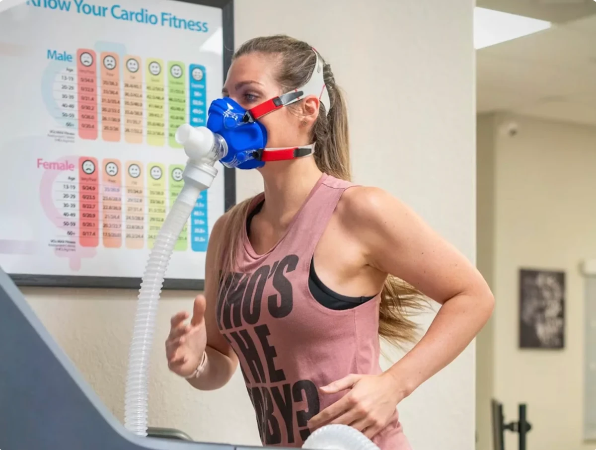
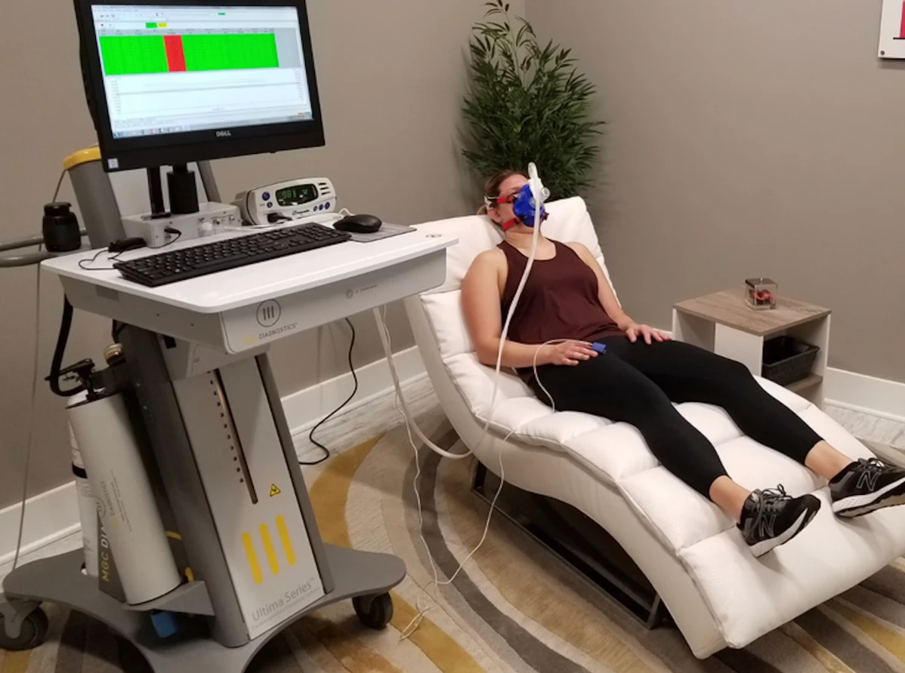

3Check your email for confirmation & instructions.
Use code NEWCLIENT20 for 20% OFF. Get a DEXA scan for only $159$127!
As seen on
NETFLIXGQShapeBverywell fitMEN'S JOURNAL
JMSA
★★★★★
5.0 from 1k+ reviews
The Leading Choice for Reliable DEXA Scans
"Elevated levels of visceral fat, are a more accurate measurement of your risk of chronic disease than your weight or your BMI. The gold standard of measurement is with a DEXA scan."
How to prepare for your visit
DexaFit Body Scan
Limit activity before your scan (no exercise please!)
Do NOT come in dehydrated
Please fast for at least two hours prior to your scan
Please wear workout clothes without any metal
You will be asked to empty your pockets and remove any significant amounts of metal (watch, belt, glasses, jewelry, etc.)
Small buttons or zippers that cannot be removed from clothing are fine
Please wear socks!
Do not have any gastrointestinal contrast, barium or other contrast medium, or radionuclides within 48 hours of your appointment.

VO2 Max Fitness Test
You must fast a minimum of three hours before your test (only drink water)
Limit your activity before your visit (no exercise!)
Refrain from taking any caffeine or stimulants the day of your test
Wear (or bring) workout clothes and athletic shoes
Your test is done on a treadmill or bike (10-15 minutes at the most)

RMR Metabolic Test
Fast for a minimum of four hours before your test (water only)
No caffeine, nicotine or stimulants for at least four hours before your test
No exercise the day of your test
Arrive a few minutes early – you'll rest quietly before measurement begins
The test is done reclined and relaxed (about 10-15 minutes)
Frequently Asked Questions
What makes DexaFit scans superior to traditional DEXA scans?
DexaFit upgrades standard DEXA technology with AI for more intelligent, more personalized insights. It doesn’t just measure fat and bone density. It also reveals your biological age and highlights health risks like diabetes or heart disease.
What can I learn from my DexaFit scan?
With our scan, you can unlock a vivid snapshot of your body's health. It reveals detailed insights into body fat, lean mass, bone density, and visceral fat. Track your progress through personalized targets and biological age metrics. Compare yourself to peers effortlessly and visualize improvements with an intuitive color-coded heat map.
How does DexaFit compare to other body analysis methods?
Unlike BIA or Bod Pod, DexaFit directly measures key metrics without relying on estimates. It offers a more complete picture of your body and helps detect risks like osteoporosis and sarcopenia with greater accuracy.
What should I expect during my appointment?
Fast for two hours, stay hydrated, and wear workout clothes without metal. The scan is quick, noninvasive, and uses very low radiation. No contrast agents are needed, and you receive your results right away.
How often should I get a DexaFit scan?
Most clients scan every 3 to 6 months to stay on track, monitor progress, and make informed adjustments to their training or wellness routines.
Who benefits from a DexaFit scan?
DexaFit is helpful for people focused on weight loss, athletic performance, preventive health, or longevity. Many health professionals and coaches also rely on it to guide their clients.